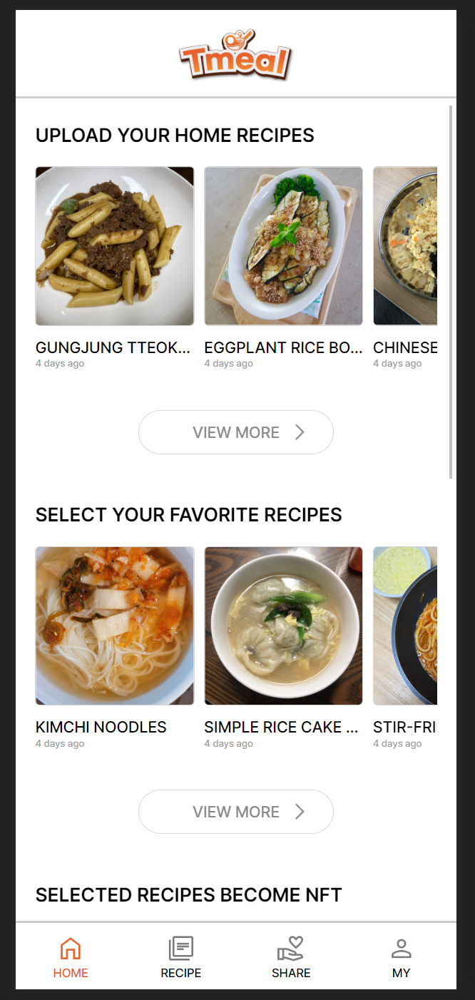

프로젝트 내용
해외 진출용 모바일 웹 어플리케이션 샘플 제작. 기존 서비스의 데이터를 영어로 전환하여 표출. 모바일 어플리케이션과 유사한 UI로 구성필요
기술스택
React, Node, Express, css, Javascript, MongoDB Atlas, AWS EC2, AWS Route53, AWS Load Balancer
맡은 역할
- 시스템 설계
- 백엔드 API 개발
- 서버 구축
- DB 구축
- F/E개발(20%)
시스템 설계
시스템의 전반적인 설계. 제공할 서비스와 기능에 따라 필요한 서버, DB 정리
<사용 기술>
- AWS: EC2, S3, ELB, Route53
- NoSQL DB: Mongodb
백엔드 API 개발 및 서버 구축
클라이언트에서 요청할 정보와 서버에서 응답할 수 있는 API 서버 개발 및 구축
<사용 기술>
- API Server: Node Express
F/E개발(20%)
클라이언트의 요청에 대한 응답을 잘 보여줄 수 있도록 개발